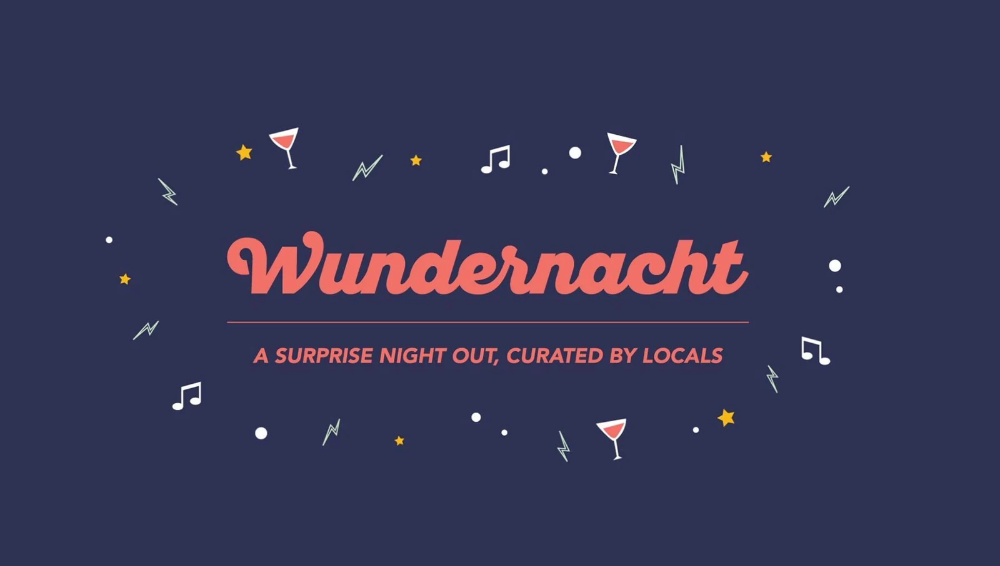

PROJECT / Surprise experiences
Wundernacht — creative events & surprise evenings
The Utrecht branch of Wundernacht, an existing Amsterdam concept. A letter beforehand and messages along the way guided participants through an evening of surprises.
- Client / partner
- Wundernacht
- My role
- Organiser of the Utrecht branch
- Period
- 2016
 WUNDER
WUNDERNACHT

The concept
Wundernacht already existed in Amsterdam. I organised its Utrecht branch: surprise evenings where participants did not know in advance what they would experience.
The evening
The day before, participants received a letter with their first meeting point. Only on arrival did they discover what they would do. Messages throughout the evening guided them to the next location, revealing the programme step by step.
My contribution
Organising the Utrecht evenings and surprises for participants as a local edition of the existing Wundernacht concept.